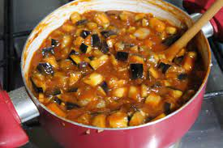

Voltar para o índice
Molho de berinjela

Ingredientes
- 1/2 cebola picadinha
- 2 dentes de alho picadinhos
- 2 tomates em cubos
- 1 berinjela em cubos
- Água QB
- 2 colheres (sopa) de extrato de tomate
- Sal, pimenta e orégano QB
Modo de preparo
-
Refogar a cebola e o alho. Acrescentar
o tomate e refogar mais um pouco.
-
Adicionar a berinjela e acrescentar um pouco de
água, o suficiente para cobrir. Acrescentar o
extrato de tomate e cozinhar até ficar macio.
-
Bater no liquidificador 1/3 do molho para usar como espessante e voltar
para a panela para engrossar um pouco.
Observação
Receita da Marinna.